File: 000420.gt.txt (if the image is defective, simply delete all Arabic text and the line will be excluded)
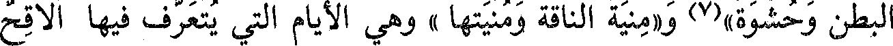
البطن وحشوة»(7) و«منية الناقة ومنيتها » وهي الأيام التي يتعرف فيها ألاقح
File: 000421.gt.txt (if the image is defective, simply delete all Arabic text and the line will be excluded)
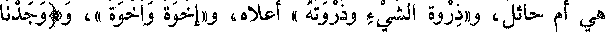
هي أم حائل، و«ذروة الشيء وذروته » أعلاه، و«إخوة وأخوة »، و(وجدنا
File: 000422.gt.txt (if the image is defective, simply delete all Arabic text and the line will be excluded)
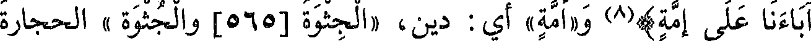
آباءنا على إمة)(8) و«أمة» أي : دين، «الجثوة [565] والجثوة » الحجارة
File: 000423.gt.txt (if the image is defective, simply delete all Arabic text and the line will be excluded)
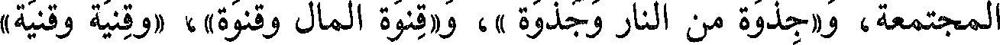
المجتمعة، و«جذوة من النار وجذوة »، و«قنوة المال وقنوة»، و «قنية وقنية»
File: 000424.gt.txt (if the image is defective, simply delete all Arabic text and the line will be excluded)
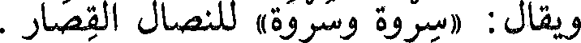
ويقال : «سروة وسروة» للنصال القصار .
File: 000425.gt.txt (if the image is defective, simply delete all Arabic text and the line will be excluded)
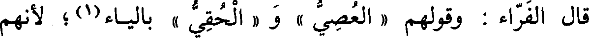
قال الفراء : وقولهم « العصي » و « الحقي » بالياء(1) ؛ لأنهم
File: 000426.gt.txt (if the image is defective, simply delete all Arabic text and the line will be excluded)
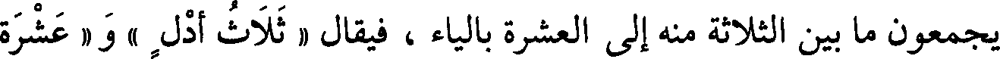
يجتمعون ما بين الثلاثة منه إلى العشرة بالياء ، فيقال « ثلاث أدل » و « عشرة
File: 000427.gt.txt (if the image is defective, simply delete all Arabic text and the line will be excluded)
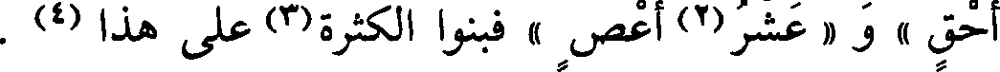
أحق » و « عشر(2) أعص » فبنوا الكثيرة(3) على هذا (4) .
File: 000428.gt.txt (if the image is defective, simply delete all Arabic text and the line will be excluded)
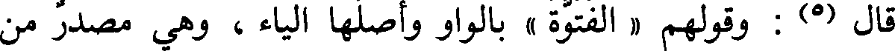
قال (5) : وقولهم « الفتوة » بالواو وأصلها الياء ، وهي مصدر من
File: 000429.gt.txt (if the image is defective, simply delete all Arabic text and the line will be excluded)
مصادر الياء شاذ حمل على مصادر الواو ، وهو (6) قولك « أب بين الأبوة »
File: 000430.gt.txt (if the image is defective, simply delete all Arabic text and the line will be excluded)
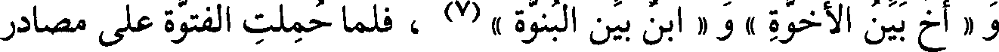
و « أخ بين الأخوة » و « ابن بين البن،ة » (7) ، فلما حملت افتوة على مصادر
File: 000431.gt.txt (if the image is defective, simply delete all Arabic text and the line will be excluded)
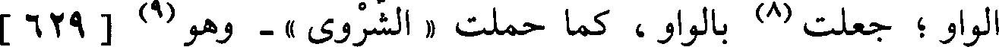
الواو ؛ جعلت (8) بالواو ، كما حملت « الشروى » - وهو(9) [ 629 ]
File: 000432.gt.txt (if the image is defective, simply delete all Arabic text and the line will be excluded)
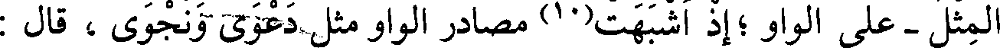
المثل - على الواو ؛إذ أشبهت(10) مصادر الواو مثل دعوى ونجوى ، قال :
File: 000433.gt.txt (if the image is defective, simply delete all Arabic text and the line will be excluded)
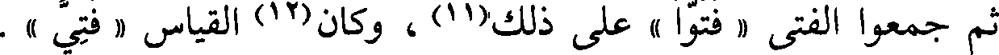
ثم جمعوا الفتى « فتوا » على ذلك(11) ، وكان(12) القياس « فتى ».
File: 000434.gt.txt (if the image is defective, simply delete all Arabic text and the line will be excluded)
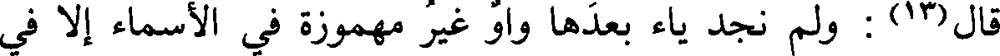
قال(13) : ولم نجد ياء بعدها واو غير مهموزة في الأسماء إلا في
File: 000435.gt.txt (if the image is defective, simply delete all Arabic text and the line will be excluded)
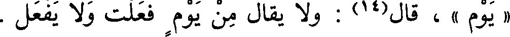
« يوم » ، قال(14) : ولا يقال من يوم فعلت ولا يفعل .
File: 000436.gt.txt (if the image is defective, simply delete all Arabic text and the line will be excluded)
باب ما جاء على فعلل وفيه لغتان
File: 000437.gt.txt (if the image is defective, simply delete all Arabic text and the line will be excluded)
فعلل وفعلل
File: 000438.gt.txt (if the image is defective, simply delete all Arabic text and the line will be excluded)
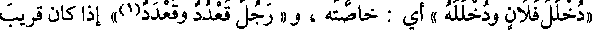
« دخلل فلان ودخلله » أي : خاصته ، و « رجل قعدد وقعدد(1)» إذا كان قريب
File: 000439.gt.txt (if the image is defective, simply delete all Arabic text and the line will be excluded)
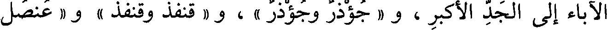
الآباء إلى الجد الأكبر ، و « جؤذر وجؤذر » ، و « قنفذ وقنفذ » و « عنصل
File: 000440.gt.txt (if the image is defective, simply delete all Arabic text and the line will be excluded)
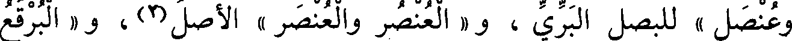
وعنصل » للبصل البري ، و « العنصر والعنصر » الأصل(2) ، و « البرقع
File: 000441.gt.txt (if the image is defective, simply delete all Arabic text and the line will be excluded)
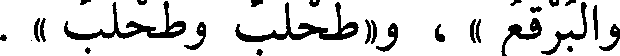
والبرقع » ، و«طحلب وطحلب » .
File: 000442.gt.txt (if the image is defective, simply delete all Arabic text and the line will be excluded)
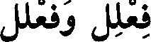
فعلل وفعلل
File: 000443.gt.txt (if the image is defective, simply delete all Arabic text and the line will be excluded)
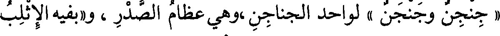
« جنجن وجنجن » لواحد الجناجن ،وهي عظام الصدر ، و«بفيه الإثلب
File: 000444.gt.txt (if the image is defective, simply delete all Arabic text and the line will be excluded)
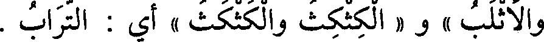
والأثلب » و « الكثكث والكثكث » أي : التراب .
File: 000445.gt.txt (if the image is defective, simply delete all Arabic text and the line will be excluded)
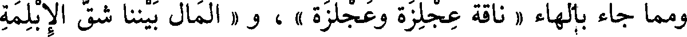
ومما جاء بالهاء « ناقة عجلزة وعجلزة » ، و « المال بيننا شق الإبلمة
File: 000446.gt.txt (if the image is defective, simply delete all Arabic text and the line will be excluded)
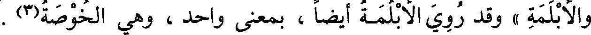
والأبلمة » وقد روي الأبلمة أيضا ، بمعنى واحد ، وهي الخوصة(3) .
File: 000447.gt.txt (if the image is defective, simply delete all Arabic text and the line will be excluded)
باب فعلال وفعلول
File: 000448.gt.txt (if the image is defective, simply delete all Arabic text and the line will be excluded)
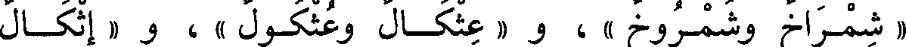
« شمراخ وشمروخ » ، و « عثكال وعثكول » ، و « إثكال
File: 000449.gt.txt (if the image is defective, simply delete all Arabic text and the line will be excluded)
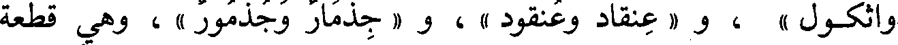
وأثكول » ، و « عنقاد وعنقود » ، و « جذمار وجذمور » ، وهي قطعة
To Save: `Ctrl+s`, make sure to choose `Webpage, complete`!